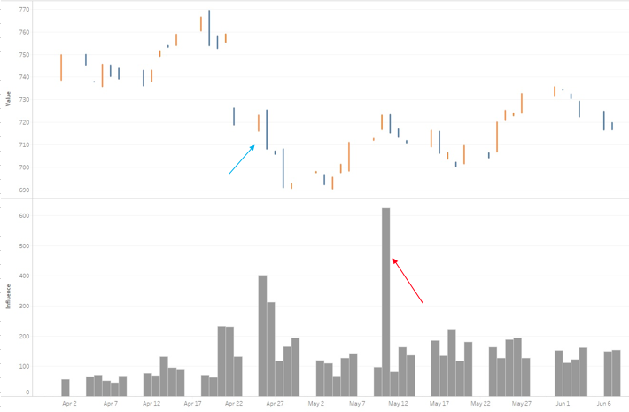
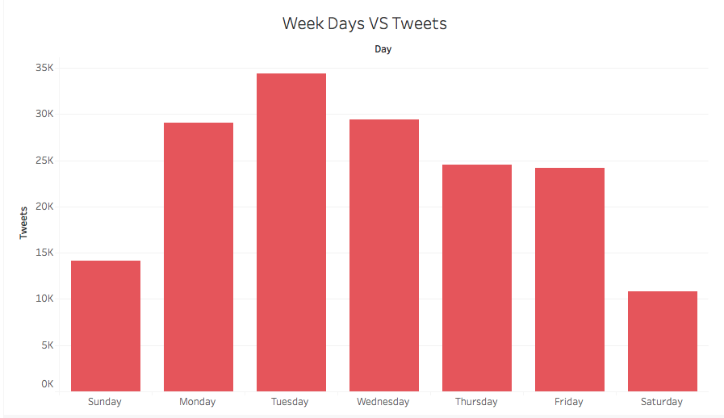
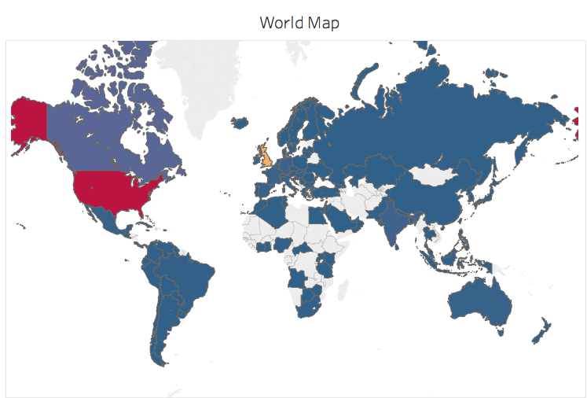
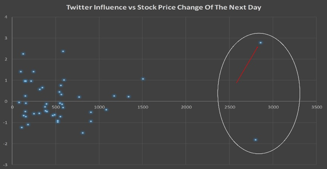
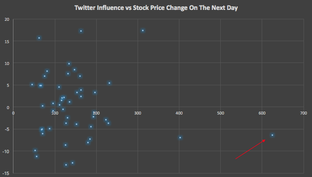

About The Project
This project introduces a bridge between Social Media and the Stock Market. Social Media has became a big part of everyone’s life, and every single individual participating in mass media has it’s own impact on the social media. Large public companies and corporations play a part in social media as well. There are thousands of companies working on tools for Stock Market: predicting, analysing, buying-selling and etc. It is almost impossible to predict the price of the company's stock with a single analysis, as there is a mountain of information to consider. There is a very well known theory in finance “Random Walk Theory”, which says that one can never predict the stock price at given time, as the stock price randomly moves up and down. Another obstacle for predicting the stock price is that the future success and failure analysis is already calculated within the stock price so theoretically it is impossible to predict the stock price.
But as mentioned above, social media has become so big that it can impact companies. The main goal of the project is to predict price of a stock using web scraping and sentiment analysis approach. The project is based on real time tweeter data, and activity in social media. Opinions of users of social media worldwide can make a difference for a company. Innovations usually bring success to the company, but what if the innovations introduced by a company are not favorable for customers. For example, Apple introduced its newest Iphone in September, and they claimed that they moved to a new era for using headphones, by removing the headphone jack, and moving to complete wireless headphones. First, it looks like a good idea and very interesting, but once Apple introduced this, even when there were rumors about this, social media was full of complains. Social media users are the customers of Apple, and this impacted the stock price, because people were not happy with removing the headphone jack.
The project is going to emphasize cases like mentioned above, and look for opinions and thoughts in social media, before it becomes trending in the news.
Data
Data was gathered from NASDAQ database, which twitter information about each. Data cleaning process was done in Python, and also data integration with stock market data from Yahoo Finance. Initial data had the following fields: Date and Time, Username, Number of Favorites, Number of Retweets. After doing several MapReduce jobs, and data preprocessing there were clean ready to use data in hand. Please see more information in Observations page.
Methods
Twitter Search API – Twitter Search API was used to get real time data from twitter about a topic or a company.
Bing News API – Bing News API was used to get real time news data, to make sure that twitter feed is not coming from news, in other words the topic is not trending yet.
Tweet Sentiment API- Tweet Sentiment API has been used to determine polarity of tweets (positive/natural/negative).
NLTK – NLTK is a natural language processing library in Python. NLTK was used to parse and normalize the twitter feed for more accurate sentiment.
Tf-Idf – Tf-Idf method was used to classify data and find cosine similarity between news feed and twitter feed.
PorterStemmer – PorterStemmer class has been used to stem news feed and twitter feed.
Program
The program is written in python. Python program calls the function every 10 minutes, and checks the real time twitter feed for given names, hashtags and terms. Program will calculate the influence of the tweets and separate them as negative or positive. The influence will be calculated by number of favorites and number of the followers that user has. If program notices big changes in twitter negative or positive influence, it will check the real time news feed and determine whether the twitter feed comes from the news, in other words it will check whether the topic is trending or not, using cosine similarity.
Insights
Analyzing the data, there were very interesting correlations found between stock market and social media. Stock market is unpredictable, but at the same time if one can predict one or two prices per year, it is an opportunity.
In order to have better idea in stock market changes and twitter data, historic twitter data and stock market data has been gathered to analyze and inspect to find colorations. The data has been normalized so we compare the price of the stock market with the twitter data of the prior day of stock price change.
Please see bellow Figure 1.1 for Apple Inc. price change and the twitter data activity of the prior day
Fig. 1.1 Apple Inc. Price and Influence

As illustrated in Fig. 1.1 the twitter data has been reacting to price change the day of the change, which is natural but here is one point the graph, marked with red arrow, the price of the stock that day has been dropped after the twitter data activity. This is type of cases are the ones that the program will act successfully. This change might be caused by many reasons such as: a new product, announcements, financial reports or just rumors in social media. Of course it matters what is the cause of the twitter activity but in our case we care about the fact of twitter hyperactivity.
In order to further analyze and discuss the stock market and twitter data company Alphabet Inc. has been chosen. Alphabet Inc. is a parent company of Google, and also Alphabet includes many more other companies. Please see stock price and the influence of twitter of Alphabet Inc. in the following graph.
Fig. 1.2 Alphabet Inc. Price and Influence

In the Fig. 2 we can see a big price change (marked with blue arrow) and it is associated with high change of influence, even though influence is comparably high but it is not so high that would interest us at his point. While looking at the influence level marked with red arrow, we can see that there are no big price changes recorded. The high influence can be caused by a big change in price in last few days. Analyzing what we have, we cannot be curtain about this case, but we know for fact that there was a high twitter activity associated with big price change next day.
Company, Tesla has been chosen for further analyze. As Tesla one of the most successful none IT companies, it would be interesting to analyze Tesla stock price with Twitter Data for a period of time.
Fig. 1.3 Tesla Motors Inc. Price and Influence
In the Fig. 1.3, the date marked with red arrow indicates that only interesting point for us to look into. There was a huge price growth, with very high influence. Moreover, the price kept changing while the twitter data was very active. There are many other points in the graph having high influence level, but the price change was not recorded for the next day. This can be associated with past events that happened with the company, or stock market. It is natural that twitter reacts to the stock market changes late. As we do not have the data of twitter before the point marked with red arrow, so we cannot make conclusions about the causes of Twitter activity.
Fig. 1.4 Facebook Inc. Price and Influence
As market in the Fig. 1.4 with red arrow, the point is the only hyperactivity in the graph. As the twitter data graph is shifted a day forward we can see that the first spike of the twitter data had no influence on the stock market. And stock price was not changed, but the following day was a huge incline (marked with blue sign). This is an essential point in the project. These are cases that are intersting and worth analyzing furthure.
Observations
For data analysis and visualization purposes, Apple Inc. company has been used to visualize data and observe.
Best Time Of The Day
Using MapReduce techniques data was normalized to find the most active and passive times for twitter feed.
Fig. 2.1 Apple Inc. Best Time Of The Day

Fig. 2.2 Alphabet Inc. Best Time Of The Day
Fig. 2.3 Tesla Motores Inc. Best Time Of The Day
Fig. 2.4 Facebook Inc. Best Time Of The Day
In Figuries 1, 2 , 3 and 4 illustrate the most active times of the twitter feed about the companies. Even though this information is not directly linked to the project purpose but these will help to observe social media and stock market more effectively. Even though this is not a statistics that we can rely on for future, as it is really based on the time line analyzed, but this can be used to furthure analyze the data.
Best Day Of The Week
Using MapReduce techniques data was normalized to find the most active and passive days for twitter feed.
Fig. 2.5 Apple Inc. Day Of The Week

Fig. 2.6 Alphabet Inc. Day Of The Week
Fig. 2.7 Tesla Motors Inc. Day Of The Week
Fig. 2.8 Facebook Inc. Day Of The Week
In Fig. 5, 6 ,7 and 8 are illustrated the most active days of the twitter feed about Apple Inc. and Alphabet Inc. Even though this information is not directly linked to the project purpose but this will help to observe social media and stock market more effectively.
Price Change Average Of Week Days
Using MapReduce techniques data was normalized to find average positive and average negative changes of the stock price of Apple Inc..
Fig. 2.9 Apple Inc. Price Change

Fig. 2.10 Alphabet Inc. Price Change
Fig. 2.11 Tesla Motors Inc. Price Change
Fig. 2.12 Facebook Inc. Price Change
In Fig. 9, 10, 11 and 12 are illustrated the average negative and average positive price changes. Even though this information is not directly linked to the project purpose but this will help to observe social media and stock market more effectively.
World Heat Map Of Twitter Feed
The location of each Twitter user has been determined using Twitter Search API, and using MapReduce techniques the data was normalized.
Fig. 2.13 Apple Inc. Twitter Feed Heat Map

Fig. 2.14 Alphabet Inc. Twitter Feed Heat Map

Fig. 2.15 Tesla Motors Inc. Twitter Feed Heat Map
Fig. 2.16 Facebook Inc. Twitter Feed Heat Map
In Fig. 13, 14, 15 and 16 are illustrated the world heat map showing number of tweets about Apple Inc. and Alphabet Inc. Even though this information is not directly linked to the project purpose but this will help to observe social media and stock market more effectively.
Results
Due to the nature of the program that is based on the real time data, it is impossible to test and calculate accuracy on. For that reason, past data was used to observe and find if the program will successfully operate if the twitter feed is hyper active but the stock market has not been changed.
For testing purposes Apple Inc. and Alphabet Inc. historic stock price and historic twitter data has been chosen to conduct analysis on.
The Influence Of The Twitter Feed And Stock Price Change Of The Following Day Of Apple Inc.
A scatter plot has been used to visualize the data and find correlations between twitter data and stock market. The data was normalized for twitter feed of the day and price change of the next day.
Fig. 1 Apple Inc. Influence and Stock Price Change Of The Follwoing Day

In Fig. 1 is illustrated the influence and stock price change of Apple Inc. next day, the purpose of this kind of normalization is that we care about the price change in the next day because it is natural for twitter users to tweet about a topic that has influenced the stock price already.
In Fig. 1 we can see two points that could interest us (marked with white circle). Both of these points are on high influence and high price change. For this case we will look only at one point with highest influence and highest price change (marked with red arrow). As we can see the price has changed with almost 2.75$ in a day, but the prior day the twitter feed was very active. This shows us the program would be able to grab this information, and make decision of buying or selling the stock.
The Influence Of The Twitter Feed And Stock Price Change Of The Following Day of Alphabet Inc.
A scatter plot has been used to visualize the data and find correlations between twitter data and stock market. The data was normalized for twitter feed of the day and price change of the next day.
Fig. 2 Alphabet Inc. Influence and Stock Price Change Of The Follwoing Day

In Fig. 2 is illustrated the influence and stock price change of Alphabet Inc. next day, the purpose of this kind of normalization is that we care about the price change in the next day because it is natural for twitter users to tweet about a topic that has influenced the stock price already.
We can’t see any points on the Fig. 2 that matches our criteria, we do not have any high price change on the data while having high influence in Twitter feed prior to the day. The high influence points indicate the days that Twitter users have been active on an event that has happened already.
The Influence Of The Twitter Feed And Stock Price Change Of The Following Day of Tesla Motors Inc.
A scatter plot has been used to visualize the data and find correlations between twitter data and stock market. The data was normalized for twitter feed of the day and price change of the next day.
Fig. 3 Tesla Motors Inc. Influence and Stock Price Change Of The Follwoing Day
In Fig. 3 is illustrated the influence and stock price change of Alphabet Inc. next day, the purpose of this kind of normalization is that we care about the price change in the next day because it is natural for twitter users to tweet about a topic that has influenced the stock price already.
We can’t see any points on the Fig. 3 that matches our criteria, we do not have any high price change on the data while having high influence in Twitter feed prior to the day. The high influence points indicate the days that Twitter users have been active on an event that has happened already.
The Influence Of The Twitter Feed And Stock Price Change Of The Following Day of Facebook Inc.
A scatter plot has been used to visualize the data and find correlations between twitter data and stock market. The data was normalized for twitter feed of the day and price change of the next day.
Fig. 4 Facebook Inc. Influence and Stock Price Change Of The Follwoing Day
In the Fig. 4 we can see two spikes in the twitter activity (marked with white circle). These points are the points that interest us only. The point marked with red arrow shows that highest price change in the circle. The reason of the high twitter activity is the big price shift the day before. It is very important to take into consideration these factors.